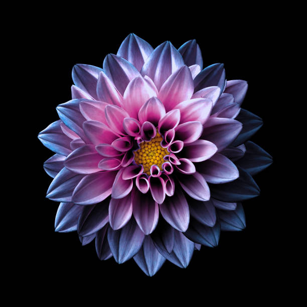

Home Page
walpaper

my codepen
Here is my codepen link
ordered list
- First item
- 1st
- 2nd
- 3rd
- Second item
- 1st
- 2nd
- 3rd
- Third item
- 1st
- 2nd
- 3rd
unordered
unordered list
- I am first item in unordered list
- i am subset of this line
- i am second subset of this line
- i am second item in unordered list
- i am subset of this line
- i am second subset of this line
- i am third item in unordered list
- i am subset of this line
- i am second subset of this line
PICTURE
